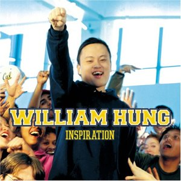

Career
Intro
William Hung's career was launched in 2003 when he auditioned for American Idol. The audition didn't go as planned but it did launch Mr. Hung's career in was he never expected.
Skills/Talents
- Mr. Hung's greatest talent is his inability to sing or dance. It has provided entertainment for millions.
- Mr. Hung's resilience to criticism and bullying is staggering. He let the world make fun of him and instead of being defeated by it, created a career out of it.
- Mr. Hung is a motivational speaker for technology companies
Published works
- Released April 6, 2004
- Sold 200,000 copies
- Released October 19, 2004
- Sold 35,000 copies
- Released July 12, 2005
- Sold 7,000 copies
Where he lived
- Mr. Hung was born in Sha Tin, Hong Kong.
- Mr. Hung next lived in Camden, New Jersey for a short period of time.
- From 1989 - 1993 Mr. Hung lived in Los Angeles, CA.
- Mr Hung went to college at the University of California in Berkeley, CA.
- 2011 Mr. Hung moved back to Los Angeles, CA.
Collaborators
- Mr. Hung has performed live with Larry Platt for the song "Pants On The Ground"
- Mr. Hung performed live with Ricky Martin for the song "She Bangs"
Awards
- Mr. Hung has not won any awards that are of public record.